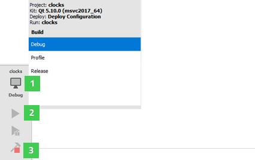
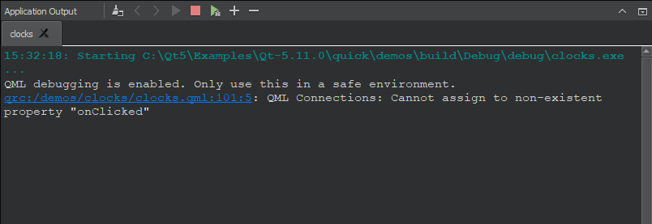

Running on Multiple Platforms
By default, running an application also builds it and deploys it to a location from where it can be run on the desktop, on a device emulator or simulator, or on a device that is connected to the development PC.
To run executable files without deploying them first, select Build > Run Without Deployment. To make this the default option, deselect the Tools > Options > Project > Always deploy project before running it option.
To run applications:
- Click the Build and Run Kit Selector icon (1) or select Build > Open Build and Run Kit Selector to select the build and run kit.

- Click the Run button (2).
The Application Output pane displays the status of the application while it is running. You can select the Run button in the pane to re-run applications without building them first. This is useful when developing Qt Quick applications, because the QML files are interpreted at runtime. Therefore, the application does not need to be built again if you edited only QML files. This saves time especially if the application contains large image files that would need to be bundled into the resource file before running the application.

For more information on the options you have, see Specifying Run Settings.
Running on Embedded Linux Devices
To build the application and run it on a device:
- Specify a connection to the device. For more information, see Connecting Embedded Linux Devices.
- Click the Run button.
Qt Creator uses the compiler specified in the project build settings (tool chain) to build the application.
Qt Creator copies the application files to the connected device and runs the application. The application views are displayed on the device. Command-line output is visible in the Qt Creator Application Output view.
Choose Projects > Embedded Linux > Run to view the settings for deploying the application to the connected device. For more information, see Specifying Run Settings for Linux-Based Devices. Debugging works transparently if GDB server is installed on the device and it is compatible with the GDB on the host.
Running on QNX Devices
- Connect the device to the development PC or to the Wi-Fi network.
- Configure the device and specify a connection to it. For more information, see Connecting QNX Devices.
- Make sure that your kit has your QNX device set.
- Click the Run button.
Qt Creator uses the compiler specified in the QNX tool chain to build the application.
Note: Debugging is currently only fully supported on Linux and macOS. It is not possible to insert breakpoints during runtime on Windows.
Troubleshooting Errors
To support running, debugging, and stopping applications from Qt Creator, the QNX Neutrino RTOS should provide a few additional command line tools and services, as described in Qt Creator Target Requirements.
Debug Output Cannot Be Shown
For the command-line output to show up in the Application Output, Qt Creator needs to be able to establish an SSH connection to the device. This is only possible if QNX Momentics is not running, and the SSH key configured for the device is a 4096-bit key.
If these conditions are not met, you will get an error message saying debug output cannot be shown.
Cannot Run, Debug, or Stop Applications
The board support package (BSP) for the QNX device might be missing some of the following applications that Qt Creator needs to run, debug, and stop applications on QNX devices: awk, grep, kill, netstat, print, printf, ps, read, sed, sleep, uname, slog2info, and cat.
For more information, see Other Utilities on the Target Device.
Running Python Projects
You can execute Qt for Python applications directly from Qt Creator. If you used the new project wizard to create the application project, the main.py file is automatically executed when you select the Run button.
You can specify another file to execute in the run settings of the project.